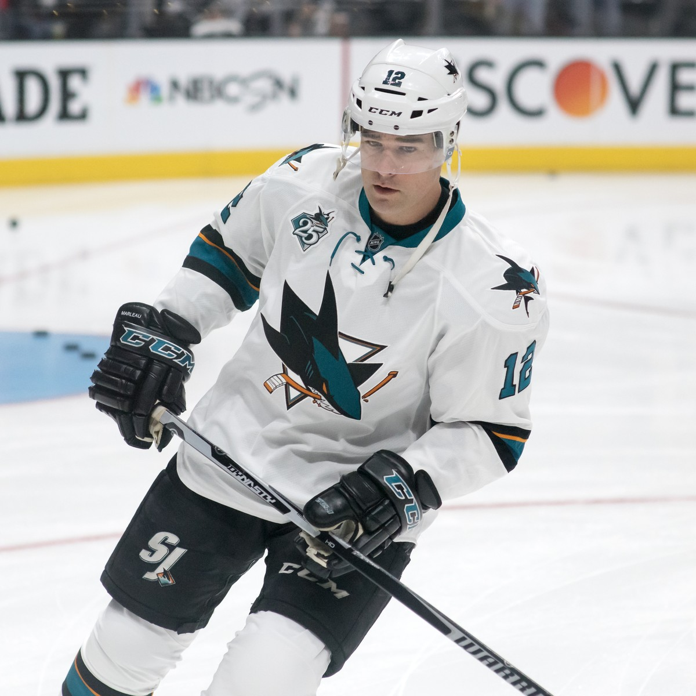
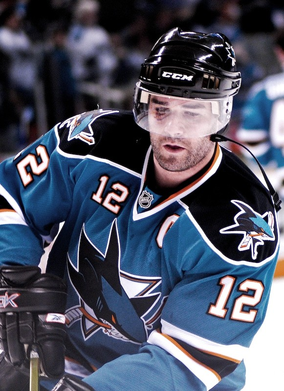
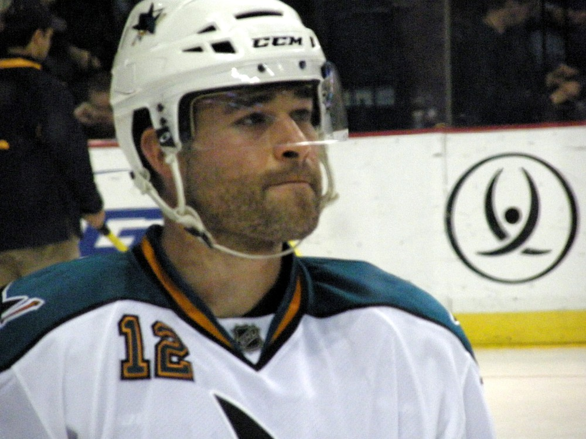
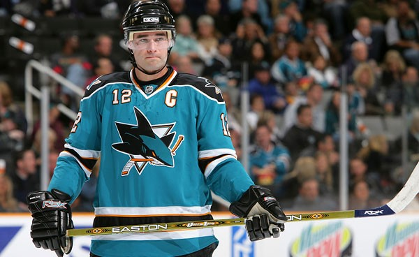
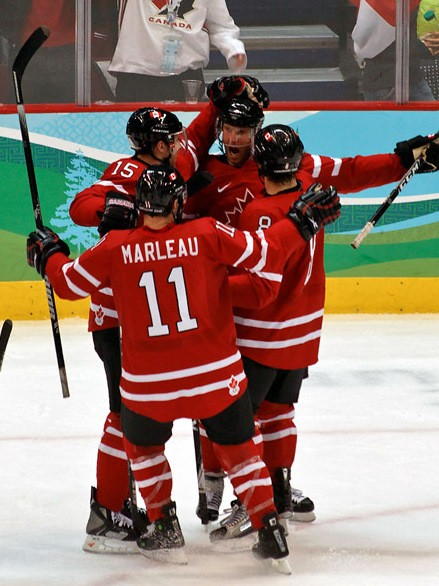

Patrick Marleau
An 18 year old farm kid from Saskatchewan who grew up in teal, scored more goals than any Shark ever and played more NHL games than anybody.
The Patrick Marleau Story
Patrick Marleau was born in Swift Current, Saskatchewan, on September 15, 1979, and grew up on his family's farm near Aneroid. There's a sign out on Highway 13 that says it's his hometown. He played two seasons with the Seattle Thunderbirds in the WHL, scoring 51 goals and 125 points as their captain in 1996/97.
The Sharks took him second overall in the 1997 draft, one pick after Boston took Joe Thornton. He was the youngest player in that draft, and he made his NHL debut on October 1, 1997, at 18 years and 6 days old, the youngest debut in the league since 1945. He didn't leave the lineup for a very long time.
He learned the defensive side of the game under Darryl Sutter and grew into a 20 goal, 50 point player. Midway through 2003/04 the Sharks gave him the C for good after Owen Nolan left, and he went to his first All Star Game that season and led us to the conference final, with 8 goals in 17 playoff games.
After the lockout he broke out with 34 goals, 52 assists and 86 points in 2005/06, the same season Thornton arrived. In January 2007 he passed Nolan as the franchise leader in points and goals, and within a few weeks he had the assists record too. He was a Lady Byng finalist twice, in 2006 and 2014, because he played that fast and that clean.
He lost the captaincy in the summer of 2009 and answered with the best goal scoring year of his life: 44 goals and 83 points in 2009/10, on a line with Thornton and Dany Heatley. He reached 30 goals in just 47 games, the fastest in franchise history. Then he won Olympic gold in Vancouver, and in the playoffs he scored the overtime winner in Game 3 and the series clincher in Game 5 against Detroit.
On January 17, 2011, he played his 1,000th game and scored early against Phoenix, the youngest player ever to hit 1,000 games with one franchise. When the 2013 season finally started after another lockout, he scored two goals in each of the first four games, something only Cy Denneny had done before him, back in 1917/18. He scored his 400th career goal that March.
He won a second Olympic gold in Sochi in 2014. In 2016 he finally got to the Stanley Cup Final with us, with 13 points in 24 playoff games. On January 23, 2017, he scored four goals in the third period in Colorado, the first Shark ever to score four in a period, and on February 2, 2017, in Vancouver, he scored his 500th, only the 17th player to do it with his original team.
In July 2017 he signed with Toronto. It hurt. He left holding nearly every offensive record in Sharks history, and he played two seasons as a Maple Leaf. When Carolina got him in a trade in 2019 and bought him out, he came home. He signed back on October 9, 2019, and the next night scored twice in a 5 to 4 win over Chicago. Later that month he played his 1,500th game as a Shark.
We traded him to Pittsburgh in February 2020 so he could chase a Cup, and the Penguins lost to Montreal in four games. He came back to San Jose that October for one last season, and on April 19, 2021, in Las Vegas, he played his 1,768th regular season game and passed Gordie Howe for the most in NHL history. Two nights later he became only the fourth player with 900 straight games.
He finished with 1,779 games, 566 goals and 1,197 points. With the Sharks alone he played 1,607 games and scored 522 goals, 589 assists and 1,111 points, all franchise records except the assists, where he's second to Thornton. He also holds the Sharks records for power play goals, shorthanded goals, game winning goals and shots. He announced his retirement on May 10, 2022.
On February 25, 2023, before a game against Chicago, the Sharks retired number 12, the first number in franchise history to go to the rafters. Thornton spoke, Owen Nolan and Evgeny Nabokov sat on the ice, and Rollie Fingers, Chris Mullin and Barry Bonds walked out with him for the banner. He and his wife Christina still live in San Jose with their four sons, and he still works with the Sharks.
What He Meant to Us
Patty was ours from the beginning. Eighteen years old, six days past his birthday, fast, and from a farm in Saskatchewan. Every other great player in this town showed up from somewhere else. He grew up right in front of us.
I'll never forget how fast he was. He'd pick up the puck in his own end and just go, and you'd stand up in your seat before you even knew why. He scored the overtime winner in Detroit in 2010, he scored five of our seven goals in that Chicago series, and he did it all clean enough to be up for the Lady Byng twice.
When he signed with Toronto I was mad for about a week, then I just missed him. Seeing him come back in 2019 and score twice on his first night back was one of the happiest nights I've had as a Sharks fan. And when he passed Gordie Howe in Vegas and choked up saying he just loves it, I choked up with him.
He holds basically every record that matters in our building. First number in the rafters, and it should've been. Number 12 and number 19, side by side, the way it was for all those years on the ice.
In Pictures




Why He Was Clutch
Marleau's stats are full of big goals. His 109 career game winning goals are tied for seventh in NHL history, and 101 of them came in teal, the franchise record. When the Sharks needed a goal, the puck usually found its way to number 12.
The 2010 playoffs were his best stretch. In Detroit, in Game 3 of the second round, he scored in overtime at 7:07 after we came back from two down in the third. Back home in Game 5 he scored the winner that closed out the Red Wings. Then he scored five of our seven goals against the eventual champion Blackhawks.
He had big moments in 2008 too, scoring shorthanded goals on back to back days in Games 3 and 4 against Dallas, the first player to do that in the playoffs since Brett Hull in 2002. His 72 career playoff goals, 68 with us, are why we kept believing every spring.
Clutch Moments
- October 1, 1997
An 18 year old in teal
Six days after his 18th birthday, Marleau made his NHL debut for the Sharks, the youngest debut in the league since 1945. He scored 13 goals as a rookie and didn't stop for 23 seasons.
- May 4, 2010
Overtime winner in Detroit
Down two goals in the third period of Game 3 at Joe Louis Arena, the Sharks came back to force overtime. Marleau ended it at 7:07 of the first overtime for a three games to none series lead.
- May 8, 2010
Closing out the Red Wings
Back at the Tank in Game 5, Marleau scored the game winning goal and Evgeni Nabokov made 33 saves as the Sharks eliminated Detroit and reached the Western Conference Final.
- January 23, 2017
Four goals in one period
In Colorado, Marleau scored four goals in the third period, three of them in 7 minutes and 42 seconds. Nobody in Sharks history had ever scored four in a single period before.
- February 2, 2017
Goal number 500
In Vancouver, Marleau scored his 500th career goal. He was the 45th player in NHL history to get there and only the 17th to do it with his original team.
- October 10, 2019
Coming home with two goals
One day after signing back with the Sharks, Marleau scored twice in a 5 to 4 win over Chicago, the team's first win of the season. Three nights later the home crowd gave him a standing ovation.
- April 19, 2021
Passing Gordie Howe
In Las Vegas, Marleau played his 1,768th regular season game and passed Gordie Howe, who had held the record since 1961. Play stopped after his first shift, both teams tapped their sticks, and after the game the Golden Knights lined up to congratulate him.
- February 25, 2023
The first number in the rafters
The Sharks retired number 12 before a game against Chicago, the first jersey retirement in franchise history. Joe Thornton spoke, and Rollie Fingers, Chris Mullin and Barry Bonds joined him on the ice for the banner raising.
The Highlights
What They Said About Marleau
“The emotional roller coaster, it was definitely a long ride.”
“To be merely mentioned in the same sentence as Gordie Howe is an achievement most hockey players can only dream about. To break one of his records is historic.”
“It was surreal. It just flashes before your eyes. Everything I did led up to this moment.”
“I'm so happy to be part of that story, of the evolution of hockey in the Bay Area.”
“Because I could have been up there crying the whole night.”
“I'm absolutely humbled to have my number up there next to yours.”
Career Stats
| Year | Team | GP | G | A | Pts | +/- | PIM | PPG | GWG |
|---|---|---|---|---|---|---|---|---|---|
| 1997/98 | SJS | 74 | 13 | 19 | 32 | +5 | 14 | 1 | 2 |
| 1998/99 | SJS | 81 | 21 | 24 | 45 | +10 | 24 | 4 | 4 |
| 1999/00 | SJS | 81 | 17 | 23 | 40 | -9 | 36 | 3 | 3 |
| 2000/01 | SJS | 81 | 25 | 27 | 52 | +7 | 22 | 5 | 6 |
| 2001/02 | SJS | 79 | 21 | 23 | 44 | +9 | 40 | 3 | 5 |
| 2002/03 | SJS | 82 | 28 | 29 | 57 | -10 | 33 | 8 | 3 |
| 2003/04 | SJS | 80 | 28 | 29 | 57 | -5 | 24 | 9 | 5 |
| 2005/06 | SJS | 82 | 34 | 52 | 86 | -12 | 26 | 20 | 4 |
| 2006/07 | SJS | 77 | 32 | 46 | 78 | +9 | 33 | 14 | 9 |
| 2007/08 | SJS | 78 | 19 | 29 | 48 | -19 | 33 | 7 | 2 |
| 2008/09 | SJS | 76 | 38 | 33 | 71 | +16 | 18 | 11 | 10 |
| 2009/10 | SJS | 82 | 44 | 39 | 83 | +21 | 22 | 12 | 6 |
| 2010/11 | SJS | 82 | 37 | 36 | 73 | -3 | 16 | 11 | 9 |
| 2011/12 | SJS | 82 | 30 | 34 | 64 | +10 | 26 | 10 | 8 |
| 2012/13 | SJS | 48 | 17 | 14 | 31 | -2 | 24 | 6 | 3 |
| 2013/14 | SJS | 82 | 33 | 37 | 70 | 0 | 18 | 11 | 4 |
| 2014/15 | SJS | 82 | 19 | 38 | 57 | -17 | 12 | 7 | 4 |
| 2015/16 | SJS | 82 | 25 | 23 | 48 | -22 | 10 | 11 | 5 |
| 2016/17 | SJS | 82 | 27 | 19 | 46 | +4 | 28 | 7 | 6 |
| 2017/18 | TOR | 82 | 27 | 20 | 47 | +1 | 16 | 5 | 5 |
| 2018/19 | TOR | 82 | 16 | 21 | 37 | -6 | 28 | 4 | 3 |
| 2019/20 | SJS | 58 | 10 | 10 | 20 | -5 | 12 | 1 | 3 |
| 2019/20 | PIT | 8 | 1 | 1 | 2 | 0 | 2 | 0 | 0 |
| 2020/21 | SJS | 56 | 4 | 5 | 9 | -9 | 10 | 2 | 0 |
| Career | 1,779 | 566 | 631 | 1,197 | -27 | 527 | 172 | 109 |
No 2004/05 season because of the NHL lockout. His 1,779 regular season games are the most in NHL history. Scroll the table sideways on a phone.
Playoffs
| Year | Team | GP | G | A | Pts | +/- | PIM | PPG | GWG |
|---|---|---|---|---|---|---|---|---|---|
| 1997/98 | SJS | 5 | 0 | 1 | 1 | -1 | 0 | 0 | 0 |
| 1998/99 | SJS | 6 | 2 | 1 | 3 | -1 | 4 | 2 | 0 |
| 1999/00 | SJS | 5 | 1 | 1 | 2 | -3 | 2 | 1 | 0 |
| 2000/01 | SJS | 6 | 2 | 0 | 2 | +1 | 4 | 0 | 0 |
| 2001/02 | SJS | 12 | 6 | 5 | 11 | +3 | 6 | 1 | 3 |
| 2003/04 | SJS | 17 | 8 | 4 | 12 | 0 | 6 | 4 | 2 |
| 2005/06 | SJS | 11 | 9 | 5 | 14 | +2 | 8 | 4 | 2 |
| 2006/07 | SJS | 11 | 3 | 3 | 6 | -5 | 2 | 1 | 1 |
| 2007/08 | SJS | 13 | 4 | 4 | 8 | -2 | 2 | 0 | 0 |
| 2008/09 | SJS | 6 | 2 | 1 | 3 | 0 | 8 | 1 | 2 |
| 2009/10 | SJS | 14 | 8 | 5 | 13 | -3 | 8 | 3 | 2 |
| 2010/11 | SJS | 18 | 7 | 6 | 13 | -1 | 9 | 3 | 1 |
| 2011/12 | SJS | 5 | 0 | 0 | 0 | -1 | 4 | 0 | 0 |
| 2012/13 | SJS | 11 | 5 | 3 | 8 | 0 | 2 | 1 | 1 |
| 2013/14 | SJS | 7 | 3 | 4 | 7 | 0 | 2 | 0 | 1 |
| 2015/16 | SJS | 24 | 5 | 8 | 13 | +4 | 8 | 1 | 1 |
| 2016/17 | SJS | 6 | 3 | 1 | 4 | -1 | 0 | 1 | 0 |
| 2017/18 | TOR | 7 | 4 | 1 | 5 | 0 | 4 | 1 | 0 |
| 2018/19 | TOR | 7 | 0 | 2 | 2 | +1 | 2 | 0 | 0 |
| 2019/20 | PIT | 4 | 0 | 0 | 0 | -4 | 0 | 0 | 0 |
| Career | 195 | 72 | 55 | 127 | -11 | 81 | 24 | 16 |